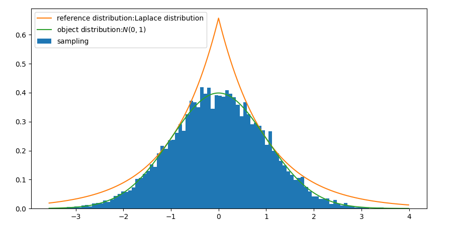
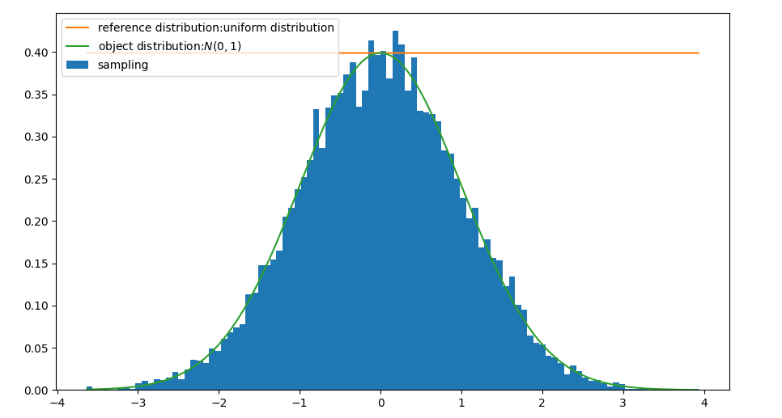

采样（三）：重要性采样与接受拒绝采样
本文介绍重要性采样与接受拒绝采样，并给出使用Laplace分布作为参考分布，采样正态分布的例子。
重要性采样（importance sampling）
在概率分布$p(x)$下计算$f(x)$均值，
其中$x_{i} \sim p(x)$，然而在很多情况下$p(x)$并不是简单的分布，无法像均匀分布、正态分布一样直接采样。这种情况下重要性采样引入一个方便采样的分布$q(x)$，把均值计算改写为，
其中$x_{i} \sim q(x)$比较容易，而$\frac{p(x_i)}{q(x_i)} f(x_i)$的计算没有任何难度。注意到$q(x_i) \ne 0$。$ \frac{p(x_i)}{q(x_i)}$可以看着是样本的权重，这正是“重要性”来源。
$p(\boldsymbol{x})$为不容易采样的分布，计算$f(\boldsymbol{x})$的均值有，
对每个样本加权，
可以验证，权重符合归一性，
接受-拒绝采样（accept-reject sampling）
假设有概率分布$p(x)$，称为目标分布，需要从中采样往往比较难，于是引入较简单的易于采样的分布$q(x)$，称为参考分布或建议分布，并定义如下函数，
现在采样样本$x_{i} \sim q(x)$，采样随机数$\varepsilon_{i} \sim U[0,1]$，如果$\varepsilon_i \le \alpha(x_{i})$，则接受样本$x_i$否则拒绝该样本，继续以上流程采样新样本，如此下去获得的样本集$x_1, x_2, \dots, x_n$，服从目标分布$p(x)$。
$q(x)$为建议分布，$p(x)$为目标分布，满足如下关系，
即$M\times q(x)$要包络$p(x)$。
因此，归一化后可获得$p(x)$的采样集，
那么接受概率是多少呢？直觉上这明显取决于$M \cdot q(x)$ 包络 $p(x)$ 的质量，考虑到接受样本需要满足，
注意下式是从$q(x)$中采样，接受概率为，
因此，高质量的采样，需要 $M$ 尽可能小，否则从$q(x)$采样出来的样本大部分都会被拒绝掉，提高了程序运行时的空转时间。
利用贝叶斯公式可以知道最后的采样分布（接受样本条件下得到的分布）为，
接下来我们给出一个例子，使用Laplace分布作为参考分布，采样正态分布。
拉普拉斯分布采样正态分布
以拉普拉斯分布为参考分布，采样目标分布为正态分布$p(x)$
拉普拉斯分布的概率密度$q(x)$，
均值和方差分别为$\mu, 2b^{2}$。
计算$M \cdot q(x)$ 包络 $p(x)$ 中$M$的最小值，
取特殊值，解得包络值的下界，
取等号获得最优包络的$M$值。
均匀分布采样正态分布
类似地，以均匀分布为参考分布，
这里正态分布参数$\sigma=1$，认为$x \in (-5\sigma , 5\sigma)$足够（正态分布的$k\sigma$法则），解得
实现
Python实现如下，
1 | import numpy as np |
以Laplace分布作为参考分布，采样正态分布，

以均匀分布作为参考分布，采样正态分布，

以上相关分析的代码实现已经开源。更详细的实验代码实现更新到：sampling-from-distribution 。
总结
以上介绍重要性采样与接受拒绝采样。对于接受拒绝采样，给出了两个例子：
- 均匀分布作为参考分布，采样正态分布
- 拉普拉斯分布作为参考分布，采样正态分布
转载请包括本文地址：https://allenwind.github.io/blog/10466
更多文章请参考：https://allenwind.github.io/blog/archives/